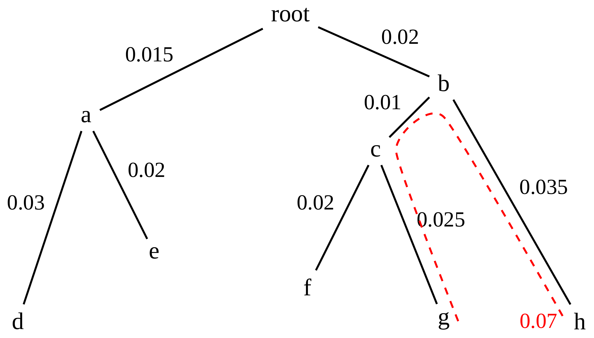
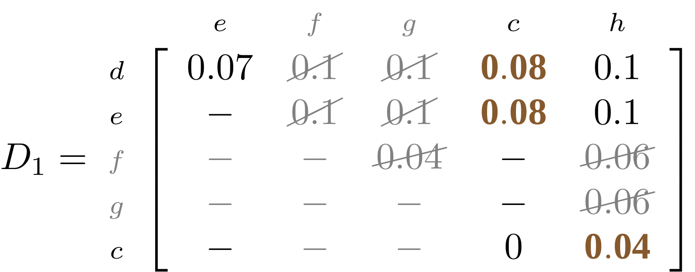

Phylogenetics - Back to Basics - Building Trees
Contributors
Why build trees?
The main reason we end up building a tree is that searching tree space for an optimal one takes too long when the number of taxa gets large.
.reduce70[
| n | # trees | yes, but how much is that really?
| — |—|:–|
| 3 | 3 | enumerable by hand |
| 4 | 15 | enumerable by hand |
| 5 | 105 | enumerable by hand on a rainy day |
| 6 | 945 | enumerable by computer |
| 7 | 10395 | still searchable very quickly on computer |
| 8 | 135135 | a bit more than the number of hairs on your head |
| 9 | 2027025 | population of Sydney living west of Parramatta |
| 10 | 34459425 | \(\approx\) upper limit for exhaustive searching; about the number of possible combinations of numbers in the National Lottery |
| 20 | \(8.2\times 10^{21}\) | \( \approx \) upper limit for branch-and-bound searching |
| 48 | \(3.21 \times 10^{70}\) | \(\approx\) number of particles in the universe |
| 136 | \(2.11 \times 10^{267}\) | number of trees to choose from in the ``Out of Africa’’ data¹ |
]
.footnote[ ¹ Vigilant et al., 1991 ]
Tree space is worse than “space” space

NGC 2207 and IC 2163 galaxies colliding.
.footnote[Source: https://commons.wikimedia.org/wiki/Commons:Featured_pictures/Astronomy]
—
Why should building work then?
Some parts of a phylogeny can be confidently accepted: when there are two species much more similar to each other than they are to any other species, we can confidently say that they are likely to be each other’s closest relatives, in the set of species of interest.
If molecular sequences evolve at a nice steady rate - the “molecular clock” hypothesis - and if there’s neither too little nor too much change, this can be good enough.
Distances from trees
Before we talk about building a tree from distances, we need to think about how distances are reflected by trees.
The most natural way to infer distances from trees is by adding the lengths of branches between each pair of nodes.
Such distances are called patristic distances (I don’t know why).
—
Patristic Distances

Rooted binary tree with branch lengths
Patristic Distances

Patristic distance between tips f and g is 0.02 + 0.025 = 0.045
—
Patristic Distances

Patristic distance between tips g and h is 0.025 + 0.01 + 0.035 = 0.07
—
Patristic Distances

Patristic distance between tips e and f is 0.02 + 0.015 + 0.02 + 0.01 + 0.02 = 0.085
Tree-like distances are easy
A set of distances between the tips (taxa) that match the patristic distances of some tree is called tree-like.
Given tree-like distances, most tree construction methods will work.
Yes, most - not all!
Clock-like
The easiest possible distance data to work with are those where the distance from the root to every tip is the same.
Such trees (and the distances derived from them) are called ultrametric (that is, they have the same root-to-tip distance for every tip).
Clock-like
For example, suppose this is the true tree relating some species of interest, with actual branch lengths as labelled:

These distances are ultrametric
.pull-left[
.image-90[  ]
]
.pull.right[
]
]
.pull.right[
- The maximum root-to-tip distance is called the height of the tree.
- Here, the root-to-tip distances are all the same. A set of distances with this property is called ultrametric.
- If the distances represent evolutionary time accurately and all the tips are in the present, then we should expect this property.
- Reconstructing trees from ultrametric distances is super easy. ] —
These distances are ultrametric
.left-column40[
]
.right-column60[
Distance matrix:
.center[
| | d | e | f | g | h |
|:—:|:—:|:—:|:—:|:—:|:—:|
|d | 0 | 0.07 | 0.1* | 0.1 | 0.1 |
|e | 0.07 | 0 | 0.1 | 0.1 | 0.1 |
|f | 0.1 | 0.1 | 0 | 0.04 | 0.06 |
|g | 0.1 | 0.1 | 0.04 | 0 | 0.06 |
|h | 0.1 | 0.1 | 0.06 | 0.06 | 0 |
]
.reduce70[* Note; this is twice the root-to-tip distance.]
]
.pull-bottom[ Any ultrametric tree satisfies the three-point condition (for rooted trees): for any three tips x, y, z, the larger two pairwise distances of D(x, y), D(x,z), D(y,z) will be equal. ]
These distances are ultrametric
.left-column40[
]
.right-column60[
Distance matrix:
.center[
| | d | e | f | g | h |
|:—:|:—:|:—:|:—:|:—:|:—:|
|d | 0 | 0.07 | 0.1 | 0.1 | 0.1 |
|e | - | 0 | 0.1 | 0.1 | 0.1 |
|f | - | - | 0 | 0.04 | 0.06 |
|g | - | - | - | 0 | 0.06 |
|h | - | - | - | - | 0 |
]
Since this is a symmetric matrix we usually just show half of it…
]
These distances are ultrametric
.left-column40[
]
.right-column60[
Distance matrix:
.center[
| | e | f | g | h |
|:—:|:—:|:—:|:—:|:—:|:—:|
|d | 0.07 | 0.1 | 0.1 | 0.1 |
|e | - | 0.1 | 0.1 | 0.1 |
|f | - | - | 0.04 | 0.06 |
|g | - | - | - | 0.06 |
]
… and only the non-zero entries.
]
The general approach
![Flow chart illustrating how sequence alignment data or dis/similarity measures are used to calculate and calculate phylogenetic distances. Colours and shapes are used to differentiate different sections of the flowchart, guiding the viewer through each step from left to right. The flowchart begins with Sequence Alignment or Dis/Similarity Measures. These are used to form a distance matrix (D) which is used to select two nodes (x and y) forming a new node z. The distance matrix is updated with the new node z until no further nodes can be formed. Described at 8:20 in the video recording.](graphics/TreeConstruction.drawio.png)
Our distances
- We get distances from molecular sequences once they have been aligned.
- There are various ways to compare aligned sequences to obtain distances:
- uncorrected “p-distance” – the proportion of sites that differ between the two sequences;
- the Jukes-Cantor (JC69) correction, which takes into account of multiple character state changes through time;
- The Hasegawa-Kishino-Yano (HKY85) model, which also allows for variation in nucleotide frequencies \(\pi_{A}, \pi_{C}, \pi_{G}, \pi_{T}\) as well as different transition/transversion rates;
- and more.
Jukes-Cantor / JC69
This model has one single parameter, assuming that the base frequencies are each 25%: \(\pi_{A}=\pi_{G}=\pi_{C}=\pi_{T}=0.25\)
The rate matrix looks like this:
.image-40[  ]
]
.reduce50[where the asterisk is a short-hand to make the row-sums equal 0.]
Under this model the expected number of substitutions between two sequences with a p-distance of \(p\) is
\(\hat{d} = \frac{-3}{4}\ln\left(1-\frac{4}{3}p\right)\)
Hasegawa-Kishino-Yano / HKY85
This model allows for variation in nucleotide frequencies \(\pi_{A}, \pi_{G}, \pi_{C}, \pi_{T}\) as well as different transition/transversion rates using parameter \(\kappa\):
.image-40[  ]
]
This model also allows for a correction to turn relative observed numbers of substitutions between the different bases into expected total number of substitutions between two sequences, but it is much more complex.
From alignment to distances
.left-column50[
 ]
.right-column50[
]
.right-column50[

Once the alignment is complete, each pair of sequences is compared to give an estimated distance between them: this forms the distance matrix for tree building.
]
—
Example
Ultrametric distances
The true tree

Original Distance Matrix
 —
—
Original Distance Matrix
 —
—
 —
—


The distance between f and g D(f,g) is the sum of the branch lengths on the path between them.
—
![The letters d, e, f, g and h are equally distributed horizontally at the bottom of the image. They represent the tips of a phylogenetic tree. An internal node c sits above the tips and is connected to nodes f and g. The distance from f to g via c is highlighted with a red dotted line and annotated with the value 0.04. A blue dotted line represents the distance between f and h with the value 0.06. A green dotted line represents the distance between g and h with the value 0.06. Described at 16:08 in the video recording.](graphics/04-TreeBuildStep4-1.png)
Similarly the distances D(f,h) and D(g,h) are the sum of branch lengths.
—
![The letters d, e, f, g and h are equally distributed horizontally at the bottom of the image. They represent the tips of a phylogenetic tree. An internal node c sits above the tips and is connected to nodes f and g. The distance from f to g via c is highlighted with a red dotted line and annotated with the value 0.04. A blue dotted line represents the distance between f and h with the value 0.06. A green dotted line represents the distance between g and h with the value 0.06. A brown line represents the path between c and h with the value 0.08. Described at 16:08 in the video recording.](graphics/04-TreeBuildStep5-1.png)
Therefore:
\(\mathbf{D(c,h)} = \frac{D(f,h)+D(g,h)-D(f,g)}{2}\)
Forming the next Distance Matrix
We need to remove columns and rows f and g, and add new column and row c.
.image-75[  ]
]
Forming the next Distance Matrix
The entries for D(f,d), D(g,d) etc get dropped.
.image-75[  ]
]
Forming the next Distance Matrix
We fill in the new entries using the formulae below:
.image-75[  ]
]
\(D(c,d) = \frac{1}{2}(D(f,d)+D(g,d)-D(f,g)) = \frac{1}{2}(0.1+0.1-0.04) = \mathbf{0.08}\)
—
Forming the next Distance Matrix
We fill in the new entries using the formulae below:
.image-75[  ]
]
\(D(c,e) = \frac{1}{2}(D(f,e)+D(g,e)-D(f,g)) = \frac{1}{2}(0.1+0.1-0.04) = \mathbf{0.08}\)
—
Forming the next Distance Matrix
We fill in the new entries using the formulae below:
.image-75[  ]
]
\(D(c,h) = \frac{1}{2}(D(f,h)+D(g,h)-D(f,g)) = \frac{1}{2}(0.06+0.06-0.04) = \mathbf{0.04}\)
—
Forming the next Distance Matrix
.image-75[  ]
—
Forming the next Distance Matrix
Completed new distance matrix:
.image-50[  ]
]


Now we have reduced the problem by one taxon / sequence: we repeat until we have just two more taxa to join and that will give us the root!
Non-clocklike trees
Losing the ultrametric property
—
Not perfectly clock-like
Now suppose this is the true tree relating some species of interest, with actual branch lengths as labelled:
 —
—
.left-column40[
]
.right-column60[
.image-75[  ]
]
The smallest distance doesn’t match a true pair of siblings.
]
Neighbo[u]r-Joining
Neighbo[u]r-Joining solves this problem by accounting for the net divergence of node from the rest, so if distances are tree-like, even if they’re not ultrametric, it will get the tree right.
The formula for net divergence, with n taxa (i.e., an n x n distance matrix) is
\(r\_{i} = \frac{1}{n-2}\sum\_{j\neq i}D(i,j)\)
And the adjusted distance becomes
\(D^{\ast}(i,j) = D(i,j) - r(i) - r(j)\)
Adjusted distance matrix
Net divergences:
.center[
| \(i\) | \(r(i)\) |
|:—:|:——:|
| d | 0.075666 |
| e | 0.050666 |
| f | 0.065666 |
| g | 0.072666 |
| h | 0.047333 |
]
Adjusted Distances:
.image-50[  ]
]

#Realistic data
Losing tree-like distances
—
- Real data are not tree-like in general.
- We should adjust the final branch lengths that are found.
- One criterion is Minimum Evolution; this minimises the sum of squared differences (“ordinary least squares”; OLS) between the patristic distances, say G, from the tree and the original distances D:
\(OLS = \sum\_{i,j}(D(i,j) - G(i,j))^{2}\)
This assumes that the estimates are independent of each other, which clearly isn’t the case as the distances between tips in the tree often share parts of the paths between them.
.reduce70[ Further reading: Denis and Gascuel: doi.org/10.1016/S0166-218X(02)00285-8. ]
Anolis tree with uncorrected p-distances

Anolis tree with JC69 distances

Anolis tree with HKY85 distances

Limitations
- A tree-building method will always give you a tree, even if the data didn’t come from one.
- There is no information on “next best” trees.
- There is no measure of “goodness” for the most part (though you could always quote the least squares error).
- Lastly, there is by default no going back on bad decisions: because NJ is a greedy heuristic, once the tree is finished, we stop. Luckily, we have programs like FastTree to do some adjustment!
#Thank you!
Next - estimating trees from alignments
—
Thank you!
This material is the result of a collaborative work. Thanks to the Galaxy Training Network and all the contributors! Tutorial Content is licensed under
Creative Commons Attribution 4.0 International License.
Tutorial Content is licensed under
Creative Commons Attribution 4.0 International License.